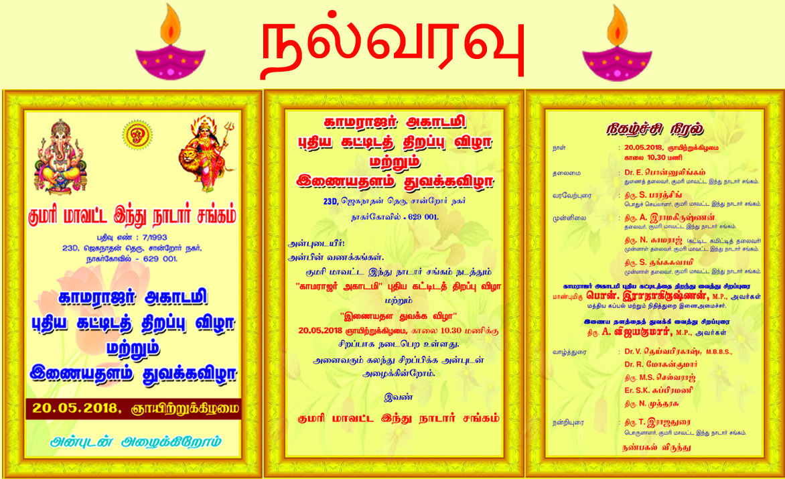

குமரி மாவட்ட இந்து நாடார் சங்க வரலாறு
கன்னியாகுமரி மாவட்டம் திருவிதாங்கூர் மாநிலத்தில் இருந்த பொழுது நாடார்களின் முன்னேற்றத்திற்காக "திருவிதாங்கூர் நாடார் மகாஜன சங்கத்தை" நம் சமூகப் பெரியோர்கள் அமைத்தனர். அந்தச் சங்கம் 9-1-1930 வியாழக்கிழமை படந்தால்மூட்டில் முதலாவது மாநாட்டை நடத்தியது. அப்பொழுது சங்கத்தின் தலைவராய் உயர் திரு.ஆர்.சிவசுப்பிரமணிய நாடார் இருந்தார். பொதுக் காரியதரிசிகளாக திருவாளர்கள் கே.பி.பொன்னையாநாடாரும், புதூர் சி .தங்கையா நாடாரும் இருந்தார்கள். அந்த மாநாட்டில் தலைவராக சென்னை உயர் நீதிமன்ற வக்கீல் ஸ்ரீமான்.எஸ்.டி.ஆதித்த நாடார் பி.ஏ.பி.எல். இருந்தார்கள்.
பதிவு செய்யப்பட்ட சங்கம்
27-07-1990 அன்று புதிய நிர்வாகக் குழு நிறுவப்பட்டது. தலைவராக T.கிருஷ்ணசுவாமி, பொதுச் செயலாளராக A.துரைசுவாமி, பொருளாளராக P.விஜயகுமார், உறுப்பினர்களாக P.P.முனுசுவாமி, T.தினகரன், S.முருகேசன், S.சந்திரசேகரன், D.நாராயணன் நாடார், A.திரவியம் நாடார், S.சீனிவாசன், A.செல்லம், P.தங்கசுவாமி, D.நாராயண நவமணி, M.இராமச்சந்திரன் ஆகியோர் செயல்பட்டனர். இவர்கள் சங்கத்தை அரசின் பதிவு செய்யப்பட்ட சங்கமாக நடத்தத் தீர்மானித்தனர். சங்கம் 7/1993 என்ற எண் கொண்ட சங்கமாகப் பதிவு செய்யப்பட்டது.
Recent Events
Grand opening ceremony of kamarajar academy and Website
